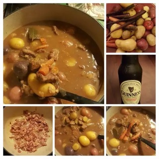

Lamb Stew

Description
This lamb stew recipe is hearty and delicious.
It's best to refrigerate the stew overnight and reheat it the next day for eating.
This stew "ages" well
Ingredients
- 1 ½ pounds thickly sliced bacon, diced
- 6 pounds boneless lamb shoulder, cut into 2 inch pieces
- ½ cup all-purpose flour
- ½ teaspoon salt
- ½ teaspoon ground black pepper
- 1 large onion, chopped
- 3 cloves garlic, minced
- ½ cup water
- 4 cups beef stock
- 2 teaspoons white sugar
- 4 cups diced carrots
- 3 potatoes, peeled and cubed
- 2 large onions, cut into bite-size pieces
- 1 cup white wine
- 1 teaspoon dried thyme
- 2 bay leaves
Steps
- Place bacon in a large skillet and cook over medium-high heat, stirring occasionally, until evenly browned, about 10 minutes.
Use a slotted spoon to transfer bacon to a paper towel-lined plate to drain.
Reserve bacon fat in the skillet.
- Place lamb, flour, salt, and pepper in a large mixing bowl; toss to coat evenly.
Brown lamb in bacon fat in the skillet over medium-high heat.
Transfer browned meat into a stockpot, leaving 1/4 cup of fat in the skillet.
- Cook onion and garlic in reserved fat in the skillet over medium heat until onion is golden. Deglaze the skillet with water, then pour onion mixture into the stockpot.
Add bacon, beef stock, and sugar to the stockpot.
Cover and simmer for 1 1/2 hours.
- Add carrots, potatoes, onions, wine, thyme, and bay leaves to the stockpot.
Reduce heat and simmer, covered, until vegetables are tender, about 20 minutes.